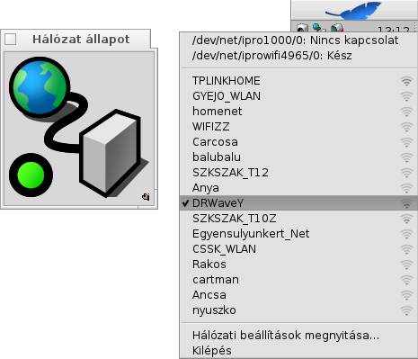

Magyar
Magyar Català
Català Deutsch
Deutsch English
English Español
Español Français
Français Italiano
Italiano Polski
Polski Português
Português Português (Brazil)
Português (Brazil) Română
Română Slovenčina
Slovenčina Suomi
Suomi Svenska
Svenska 中文 ［中文］
中文 ［中文］ Русский
Русский Українська
Українська 日本語
日本語 Hálózat állapot (NetworkStatus)
Hálózat állapot (NetworkStatus)
| Asztalsáv: | ||
| Útvonal: | /boot/system/apps/NetworkStatus | |
| Bellítások: | Nincs |
A Hálózat állapot kisalkalmazás a hálózati kapcsolat állapotát jelzi. Ha még nem fut, akkor a indításkor meg fogja kérdezni, hogy ablakban akarjuk-e futtatni, vagy az Asztalsávra szeretnénk helyezni. Ablakban futtatva lehetőségünk van átméretezni azt, vagy Replikánsként használni.
Ha már telepítve van, akkor a helyi menüvel vezérelhető.

Az első szakasz tartalmazza az összes hálózati kártyát, azok neveit és állapotát. Bármelyiken kattitnva egy üzenet ablakban megkapjuk a kátya adatait (például az IP-t).
A kártyák alatti listában az elérhető vezeték nélküli hálózatokat (amiket az első vezeték nélküli hálózati kártya talált) találjuk a nevükkel és a jelerőséggel. További információk a Műhely: vezeték nélküli hálózat fejezetben.
Végül pedig a menüpont segítségével módosíthatjuk azokat a Hálózat beállítása panelen illetve a menüvel kiléphetünk a programból.
Állapot ikonok
| Kész | A hálózati kapcsolat létrejött. | ||
| Konfigurálás | Kapcsolódás folyamatban. | ||
| Hiányos beállítás | Néhány beállítás még hiányzik (további információkat talál a Hálózat fejezetben). | ||
| Nincs kapcsolat | Nincs hálózati kapcsolat (vagy nincsen kábel bedugva, vagy nincs elérhető vezeték nélküli hálózat). | ||
| - | Nincsen hálózati kártya a gépben (vagy az is lehet, hogy a rendszer nem találja meg, mert nincs hozzá vezérlőprogram). |